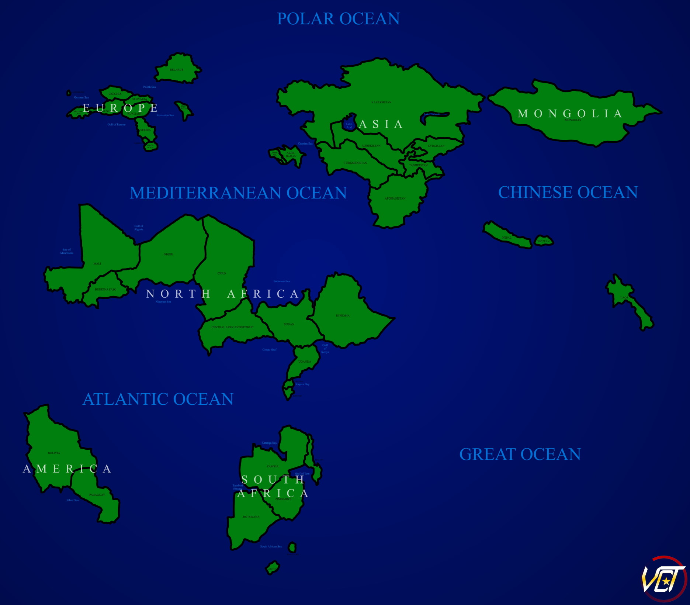

Earth, but countries are moved and all coastal countries and some city states are missing. (2019)
A map project I worked on occassionally from 2016 to 2019. These maps show most country borders that ever were.
An arguably self-explanatory map. (2019 - 2020)